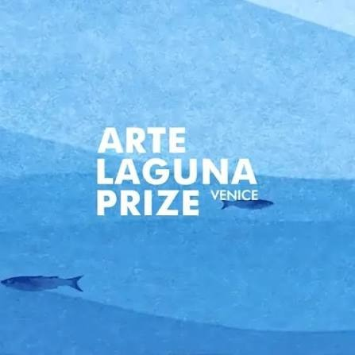

The performance work "1.4 m²" was selected in the First Selection phase of the 21st edition of the Arte Laguna Prize in Venice.
The Arte Laguna Prize is an internationally recognised contemporary art competition welcoming and exhibiting emerging artists from all over the world. It was born out of the MoCA Association's (Modern Contemporary Art Association) desire to value art in all its forms, and since 2006 it has continued its mission to enhance international artists at the historic Arsenale Nord in Venice.
The selection places the performance work "1.4 m²" among the artistic proposals that stood out from international submissions for the 21st Edition (2026).
The work explores the phenomenon of "coffin houses", cost of living, and survival within the minimal spatial dimensions of 1.4 square meters.